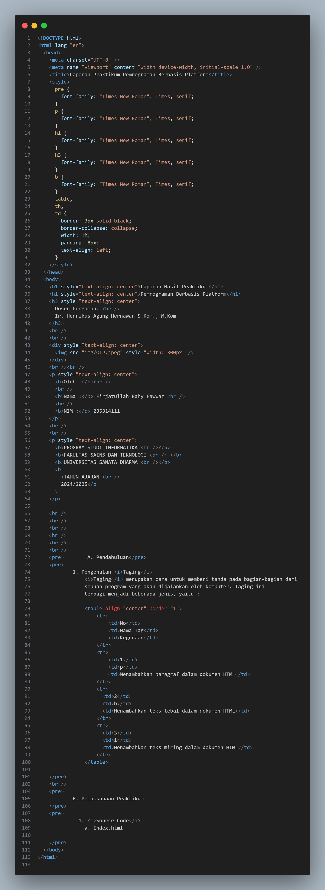

Oleh :
Nama : Firjatullah Bahy Fawwaz
NIM : 235314111
PROGRAM STUDI INFORMATIKA
FAKULTAS SAINS DAN TEKNOLOGI
UNIVERSITAS SANATA DHARMA
TAHUN AJARAN
2024/2025
A. Pendahuluan
1. Pengenalan Taging
Taging merupakan cara untuk memberi tanda pada bagian-bagian dari
sebuah program yang akan dijalankan oleh komputer. Taging ini
terbagi menjadi beberapa jenis, yaitu :
| No | Nama Tag | Kegunaan |
| 1 | p | Menambahkan paragraf dalam dokumen HTML |
| 2 | b | Menambahkan teks tebal dalam dokumen HTML |
| 3 | i | Menambahkan teks miring dalam dokumen HTML |
B. Pelaksanaan Praktikum
1. Source Code
a. Index.html

C. Daftar Pustaka
https://www.w3schools.com/html/default.asp